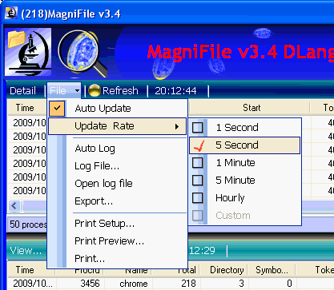

-
MagniFile C# source code and executables for:
- Download EXE (Xp32) - 408 KB
- Download EXE (Xp64) - 408 KB
- Download source - 492 KB
- Download EXE (Xp32) - 29 KB
- Download EXE (Xp64) - 29 KB
- Download source - 28 KB
Mfile C++/C source code and executables for command line tool:
Introduction
This project started out as a tool to monitor open handles to isolate a handle leak and grew into a stand-alone application. MagniFile starts by displaying the active processes in the top panel. When you select one or more processes, it will try to display the open handle information in the bottom panel. Both panels support printing, exporting and logging. If auto-update and auto-logging is enabled, the information will be logged every time the display updates.
There is nothing new in this program, it is a port of well-know logic in the unmanaged world to access system information. The only twist is I made it available to the .NET world. The program can be built to run on XP32 or XP64.
I also provide a simple C++ command line program Mfile which duplicates some of the functionality of MagniFile.
Feature Summary:
- Display Process list
- Display Open Handle list by process
- Process, Handle and Statistic lists can be exported and printed
- Automatic update/refresh (rate selectable)
- Manually or automatically Log process and/or handle information.
- Both process and handle have a secondary view to display summary information collected over time (short term version of log file).
- Handle specific features:
- Tries to display description per handle (ex: file name, directory name, registry key name)
- List can be pruned by handle type (file, dir, event, key, port, ...)
- List can be pruned to display only those with valid descriptions (removes useless handle info)
- Auxiliary Dialogs
- Display Disk, Drive, NTFS statistic information
- Display NTFS disk cluster allocation as an image
- Display File disk cluster allocation as an image
- All dialogs can be resized (I hate fixed size dialogs)
- Major dialogs are not modal (I hate modal dialogs)
- List columns can be sorted (two level column sort selection)
How To Use
Both MagniFile and Mfile access a lot of system functions. Make sure you download or build the correct version for your OS (Xp/32 or Xp/64). After you launch MagniFile it should start to update the process list every 5 seconds. Any new process is backlit in green and dead ones in red. When you select one or more processes, it tries to enumerate and describe each handle in the lower panel. Some privileged processes will display no information. Some handle queries time-out and produce a partial handle list. Lastly, some handles will produce no useful description (permission problems).Once you get a list of handles, you can use the View... menu to prune the display by type and description and/or set a group by order. If you enable group by mode, the sorting stops working.

Both the Process and Handle lists support column sorting. In addition to the normal sorting, if a duplicate is found in the primary sort column, it will defer to the secondary sort column (previously select sort column). The primary sort column has the large triangle/arrow while the secondary has the smaller triangle/arrow.
The process list has a column labeled Log. If you click in this column the Log tag will cycle on or off. If one or more Log tags are set, then only those process lines will be sent to the log file during a log update.

In addition to the Detail process view, there is a Summary view. The summary view contains those lines marked with the Log tag. The summary is updated every time the detail view is refreshed. The Log tag effects both the process summary view and process logging. The summary views will automatically trim their lists to not exceed 100 elements.

The Process, Handle and Statistic lists support automatic update/refresh, manual exporting and printing. The Process and Handle lists provide several update rates via the File menu.

Disk Information
If you need more information, you can click the left icon to get a new dialog which displays various file system information. Some of the information will display the change between the start value and the current value.

Use the check boxes at the bottom to change the display information. Press the Help button to get an explanation of the information.

Disk and Files Allocation
If you want to see a disk cluster allocation image, press the right icon  .
Nothing special, just an image which shows which clusters are allocated.
You can overlay a file allocation by:
.
Nothing special, just an image which shows which clusters are allocated.
You can overlay a file allocation by:
- Browsing for a file
- Press SysFile button and double clicking on a system file
- Right clicking on file handle entry.

The file allocation is drawn in the image overlay as small circles. The start and end of the file allocation chain is drawn in a larger orange circle. Here is a zoomed in example showing part of the disk cluster allocation image map, with a file allocation overlay. The file's starting cluster is marked with the larger orange circle. The other file allocation clusters are marked with smaller circles with a tight sequence appearing as a thick colored bar. This example shows two fragments with one large sequential chain.
To help inspect NTFS system files, press the SysFiles button to populate a list of system files. Double click on a file name to view its allocation.

The SaveAs button will allow you to save a screen capture of the dialog to a disk file.
Art Work
The artwork uses the microscope as its metaphor to represent the quest for file information. The top splash banner is made of amoebas and the disk cluster splash screen is a DNA image. The application name MagniFile is a play on the words Magnifier and File

Points of Interest
When you inspect the code you will find the following items:History
- Oct 3, 2009 v2.3
- Got File allocation map working
- Oct 18, 2009 v3.4
- Created c++ command line tool and various cleanup.